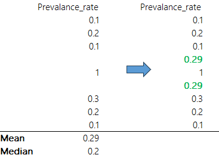
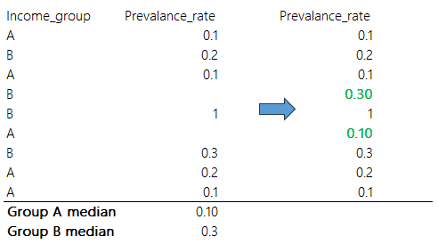
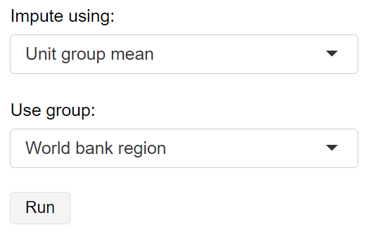
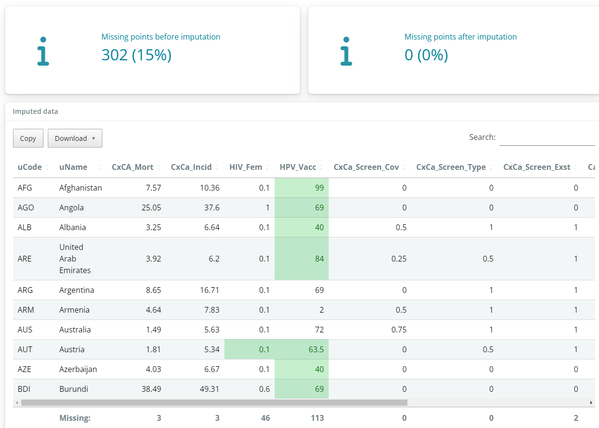

6 Imputation
Imputation is the process of estimating missing data points. There are many different ways to impute missing data: the {composer} app includes some simple approaches.
6.1 About
Imputation involves estimating missing data, and the accuracy of the estimate is dependent on many factors, such as the number of missing data points and distributions of indicators. The {composer} methods for imputation are simple, but this also makes them easy to understand. When imputing data it is always important to review the imputed data points to see whether the results are sensible.
All methods implemented in the app are univariate, i.e. each indicator is treated separately. The first two approaches are simply to substitute missing data points with the indicator mean or median. This means that for a given indicator, we calculate the mean or median of all observed data points, then any missing values will recieve this value.

A slightly more sophisticated approach is to use the group mean or median. If you have specified grouping variables in your input data (see Chapter 4), you can restrict the mean or median estimates to the unit groups. For example, we may want to impute an indicator by using the mean within country income groups. This may be more accurate if your indicator values are likely to be more similar within groups.

As with all data operations it is important to think carefully about which approach is most suited to your data. Consider that imputation is completely optional - the index can still be calculated without imputation. Moreover, you can choose to remove units with low data availability in the “Unit Screening” tab - see Chapter 5. You can also set a data availability limit for each aggregation - this is explained more in Chapter 9.
6.2 How
In the app, the methods discussed above can be easily run. In the sidebar, the “Impute using” dropdown allows you to select from one of the four methods - mean, median, group-mean and group-median.

If a group method is selected, AND you have included grouping variables in your input data, these should be available to select in the “Use group” dropdown - selecting a grouping variable will use this as the basis for grouped imputation.
When you click “Run”, the selected imputation method will be applied. This will generate a new imputed data set which will be displayed in a table. The number of missing data points before and after imputation will be reported, and the specific points that have been imputed will be highlighted green in the table. At the bottom of each column, the number of missing data points is reported. It is important to check that the imputed values are sensible, as imputation can sometimes have unexpected results.

In most cases, all missing data points will be imputed. The exception is when you impute by a unit group, and there are missing values in your grouping variable. For data points with missing group values, the app will return the data points as still missing.
As with other data operations, you can re-run the operation and change specifications, and this will overwrite the previous imputed data. You can remove imputation from the the data pipeline completely by clicking “Remove operation”.